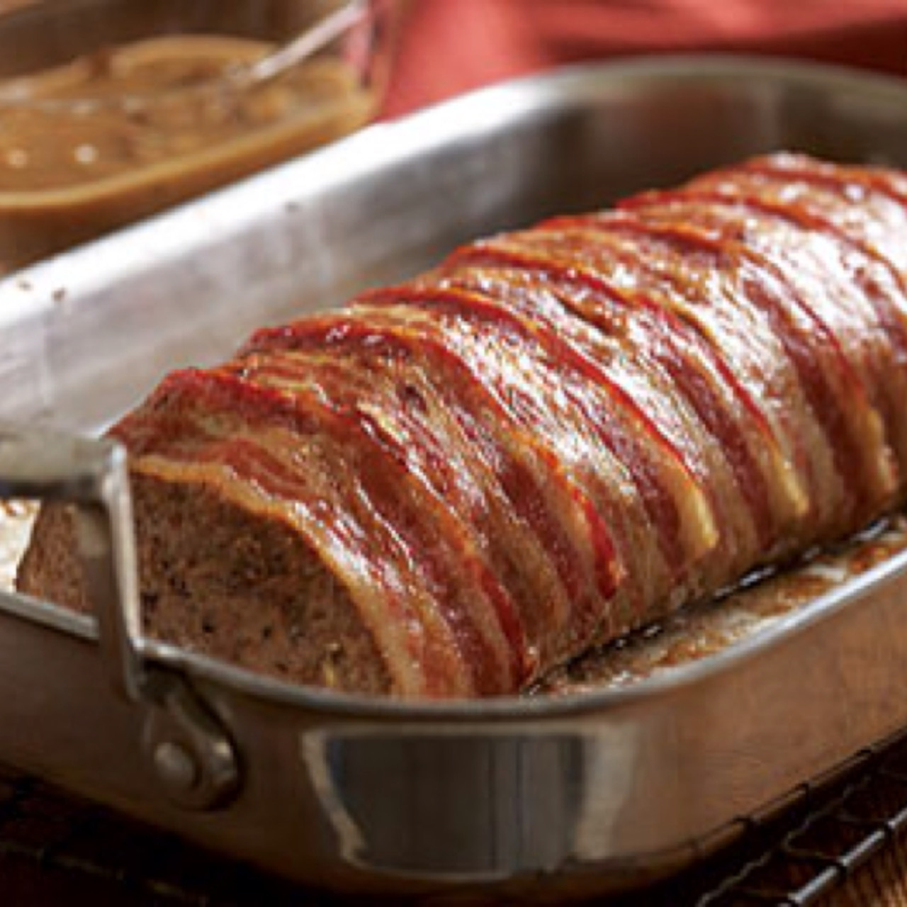

Meatloaf

Easy Meatloaf
This meatloaf recipe doesn't take long to make at all, and it's very good!
Submitted by Janet Shum - Updated on May 30, 2024
Meatloaf Ingredients
- Ground Chuck
- Vegetables
- Worcestershire Sauce
- Spices and seasonings
- Egg
- Bread Crumbs
- Glaze
How to Make Meatloaf Step-By-Step
Here's a very brief overview of what you can expect when you make homemade Meatloaf:
- Chop the Vegetables.
- Form the Meatloaf.
- Bake.
- Make the Glaze.
- Glaze the Meatloaf.
- Let the Meatloaf rest before serving.